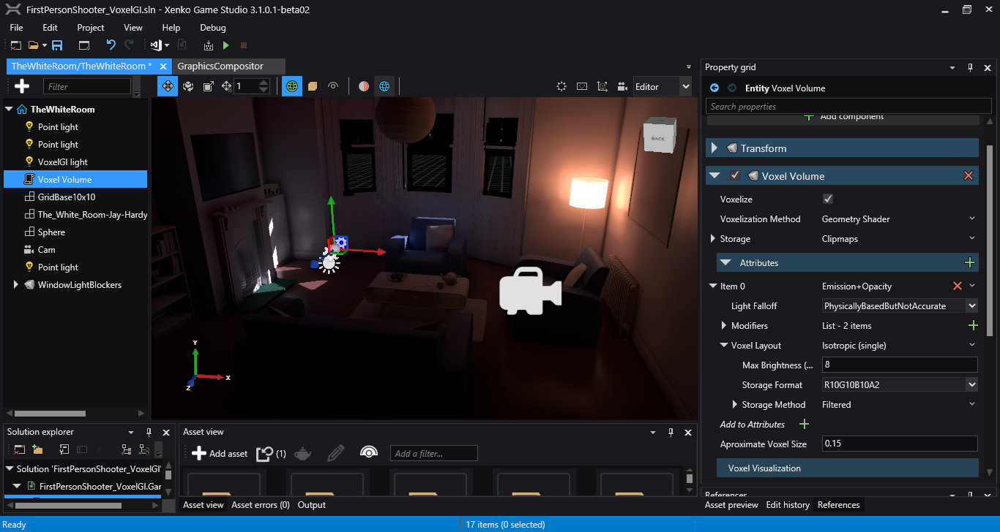
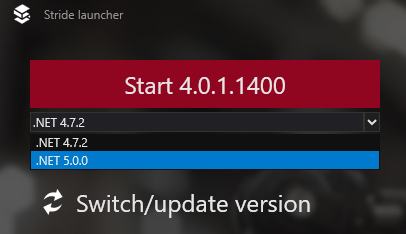
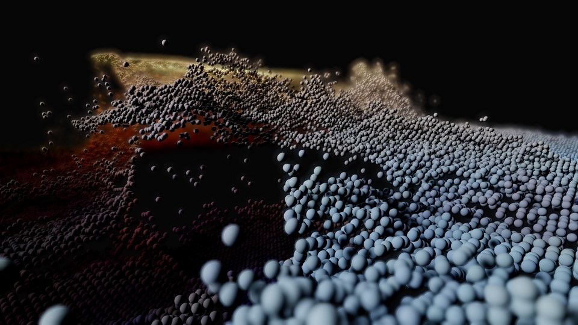
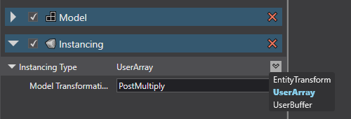
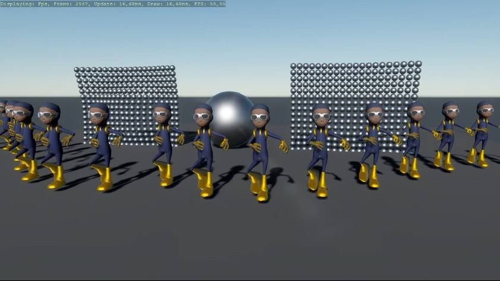
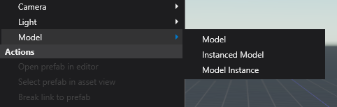
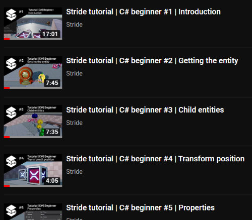
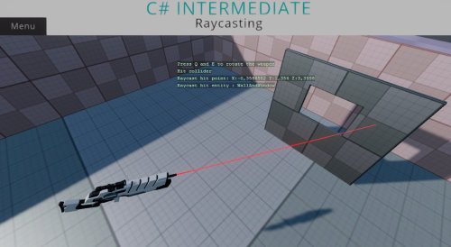

Stride 4.0 Release notes
February 1st, 2021
Xenko is now Stride!
The Xenko game engine has been renamed to Stride. From now on, all source code, blogs, and tutorials will use the name ‘Stride’ instead of ‘Xenko’.
Here is the new logo:
More details available on the dedicated blog post
Voxel Cone Tracing GI
Thanks to a substantial contribution from Sean Boettger and sponsored by David Jeske, Stride now supports Voxel Cone Tracing GI!
Here it is in action:
As you can see, there are many customizations and settings available in the editor:

There's a documentation page explaining how to set up the project with Voxel Cone Tracing GI.
Here's the original forum post and pull request. Thanks again for this great contribution!
.NET 5
Stride editor and toolchain is now running with .NET 5! Runtime has been working with .NET Core for a few versions already.
This allows us to have scripts and custom assets in a project targetting .NET Standard 2.1 or .NET 5.
If you have scripts or custom assets in a .NET Framework project rather than a .NET Standard project, you can still choose between .NET 5 and .NET Framework within the launcher:

The framework will also be displayed in the Game Studio toolbar for easier identification while both coexist.
.NET Framework version can be considered deprecated and will likely be removed in a future release (likely 4.1) to allow us to take full advantage of C# 8.0 and soon-to-come C# 9.0.
We also expect dropping .NET Framework and supporting only .NET 5 will greatly simplify our installation process since we won't depend on specific workloads or packages of Visual Studio being installed anymore. This was a recurring issue with our users.
Flexible GPU Instancing
Aka geometry instancing. Thanks to another big community contribution sponsored by vvvv, Stride now supports GPU instancing per model.

The nice thing about it is, that it plays together with the entity-component system: Simply add an Instancing component to an entity with a model. Then you can choose between 3 ways of how you generate the instances:
- EntityTransform, uses the transformation of other entities with an Instance component. This allows you to add components like physics, audio, etc. to each instance.
- UserArray, for providing an array of matrices via script
- UserBuffer, for providing a structured buffer (GPU resource) of matrices via script

UserArray and UserBuffer even allow you to specify how the matrix is multiplied with the parent transformation.
It even works with skinning:

Picking individual instances in Game Studio works as well and selects the entity with the respective Instance component.
There are also two new entity templates for easy setup:

An example project that shows the new features can be found here: StrideTransformationInstancing
Graphics API: different selection mechanism + Vulkan improvements
There's been a big overhaul on Stride build system to make Graphics API selection work in a more future-proof way.
It was previously relying on the custom RuntimeIdentifier being set in the solution. This didn't work very well because it was completely orthogonal to the existing RuntimeIdentifier, and sometimes not having good fallbacks.
From now on, the user project will use StrideGraphicsApi in the .csproj project file to specify the graphics API. We hope to expose this in the editor later.
We also took the opportunity to improve the state of Vulkan renderer (thanks to a switch to Vortice.Vulkan bindings from Amer Koleci) and automatize graphics unit tests, currently running for D3D11 and Vulkan.
It's still a work in progress so expect more in future releases.
Documentation & Tutorials
The first 10 C# beginner tutorials are recorded and uploaded to the official Stride Youtube channel. You check out the playlist here.

These videos are the video equivalent of the existing online documentation for the C# beginner template tutorials and the 'new project' template when creating a new project from the Stride launcher.
The C# beginner series should be fully recorded by the end of July 2020. After those videos are done, Jorn will put his focus on the C# Intermediate project template. Here a is work in progress screenshot on the raycasting tutorial:

New Developers are Welcome!
The Stride GitHub repository has more closed pull requests than open issues. This is a good sign! But in order to move faster and adapt to new technologies, we would be very happy to see more new talents in our friendly and professional developer community.
There are several good reasons to join us:
- Writing engine code in C# is fun and quite productive
- Stride users will work with what you create
- We are happy to help, should you get stuck
- You can learn a lot, the Stride code base is very professional and has high-quality standards
- An open-source contribution is a great addition to your portfolio
No matter whether you (or someone you know) can contribute documentation updates, UI improvements, bug fixes, or new rendering technologies, we welcome everyone!